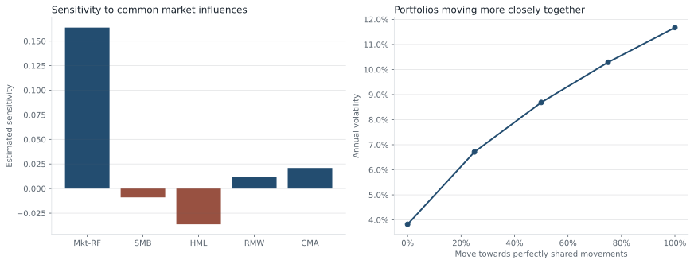

Factor attribution · stress testing · capital allocation
Portfolio Risk and Crowding Lab
A daily risk research system that reveals shared exposures, validates tail forecasts and compares constrained capital-allocation rules on public historical data.
Research question
Are six books really six independent risks?
Six book names can create an impression of diversification while sharing the same market, growth or industry exposures. This study asks how much risk is actually diversified, which books contribute to losses, and what happens when capital allocation changes.
Main finding: in this historical illustration, minimum-variance allocation reduced realised annual volatility by 53%, from 8.28% to 3.89%. Its annualised return also fell, from 9.24% to 5.94%. Risk reduction comes with an observable return trade-off.
Data distinction. Industry and factor returns are real public research data. Book definitions, capital allocations, financing and transaction costs are illustrative. The industry indices are not directly tradable and the books are not QRT or hedge-fund performance.
Interactive stress tool
Explore the risk budget
Change the final capital allocation, marginal volatility, common correlation shock or exposure scale. Calculations use the last 252 sessions available at 2025-12-31; the snapshot forecasts the following session. Historical backtest returns below do not change when these controls move.
| Book | Capital weight | Annual volatility contribution |
|---|
The correlation shock is a convex blend towards a matrix of ones, preserving a valid covariance matrix. Exposure scaling multiplies risk linearly; funding costs and market-impact feedback are excluded from this instantaneous scenario.
Research design
Build an auditable capital-allocation experiment
- Inputs and books. Use ten value-weighted US industry return series and the five Fama–French factors. Define six fixed 100%-gross industry books with disclosed long and short weights. Add cash financing, a 50 bps annual short-borrow assumption and daily internal rebalance costs.
- Risk estimation. Estimate book covariance with Ledoit–Wolf shrinkage from the previous 252 sessions. Estimate factor sensitivities by OLS on the same window and reconcile common-factor and residual sample variance separately from the shrinkage model.
- Capital decisions. At the first session of each month, compare equal allocation, inverse volatility and minimum variance under identical 3%–35% book bounds and a 15% one-way turnover budget. Between decisions, sleeve weights drift self-financingly with returns.
- Costs and chronology. Charge 2 bps per dollar of gross allocation trading, including initial deployment. Each forecast and allocation excludes the current session return; forecast cash carry uses the prior session RF. The implementation records the maximum input date for every forecast.
- Evaluation. Evaluate 2020–2025 using rules fixed in code, without optimising expected return. Compare realised volatility, drawdown, return, turnover, tail-risk exceptions, fixed-exposure historical stresses and lookback sensitivity.
Risk contributions and factor attribution
For book weights w and daily covariance Σ, daily volatility is σ = √(wᵀΣw). Book i contributes RCᵢ = wᵢ(Σw)ᵢ / σ. Contributions sum exactly to portfolio volatility; a negative contribution is a hedge.
The factor model is book excess return = intercept + β × factor returns + residual. OLS with an intercept makes factor and residual covariance orthogonal in the fitted sample. The intercept is a sample residual mean, not proof of skill.
Historical VaR is the negative 1% empirical return quantile of 252 prior scenarios at the current starting allocation. Expected shortfall averages the scenarios at or below that quantile. Normal VaR uses zero expected excess return and shrunken covariance. These are different models and are assessed separately.
Walk-forward evidence
Assess the risk and return trade-off

| Capital rule | Annualised return | Annual volatility | Maximum drawdown | Excess Sharpe |
|---|---|---|---|---|
| Equal allocation | 9.24% | 8.28% | -11.63% | 0.77 |
| Inverse volatility | 8.26% | 6.97% | -9.13% | 0.77 |
| Minimum variance | 5.94% | 3.89% | -4.64% | 0.77 |
A paired 20-session moving-block bootstrap estimates a minimum-variance/equal-allocation volatility ratio of 0.47, with a 95% interval [0.45, 0.49]. This describes sampling uncertainty conditional on the chosen books and rules; it excludes design and model uncertainty.
Portfolio deep dive
Look through book labels to their exposures



At the final snapshot, 90% of fitted sample variance is explained by the five-factor common component. The underlying industry exposure is 44% gross after cross-book netting, versus 100% before netting. Return correlations alone cannot identify shared stock holdings.
Risk validation
Challenge the tail model and allocation rules
Adverse finding: historical 99% VaR produced 27 exceptions versus 15.1 expected, with an exception rate of 1.79%. Coverage and independence tests both reject at the 5% level in this sample. The model understates and clusters tail losses; this warrants a different volatility or tail specification before operational use.

| Minimum-variance risk model | Exceptions / expected | Exception rate | Kupiec p | Independence p |
|---|---|---|---|---|
| Historical 95% | 88 / 75.4 | 5.84% | 0.146 | 0.041 |
| Historical 99% | 27 / 15.1 | 1.79% | 0.005 | 0.001 |
| Normal 99% | 27 / 15.1 | 1.79% | 0.005 | 0.011 |
Kupiec tests average exception coverage; Christoffersen tests dependence between consecutive exception indicators. Small p-values are evidence against the respective model property. These asymptotic diagnostics have limited power for rare events; a large p-value does not validate a tail model.
| Historical scenario | Window | Frozen final-allocation return | P&L on $10m |
|---|---|---|---|
| COVID sell-off | 2020-02-19 to 2020-03-23 | -5.22% | $-522,039 |
| 2022 rates repricing | 2022-01-03 to 2022-12-30 | -0.53% | $-52,624 |
| April 2025 sell-off | 2025-04-02 to 2025-04-08 | -1.98% | $-198,326 |
Historical stresses replay each book’s compounded returns using the final allocation without reallocating between books. They are counterfactual exposures to past shocks, not the portfolio’s realised returns in those windows. Daily internal book maintenance and borrow assumptions remain in the book returns.
Keep the full lookback comparison
| Prior sessions | Equal volatility | Inverse-volatility volatility | Minimum-variance volatility |
|---|---|---|---|
| 126 | 8.28% | 7.04% | 3.87% |
| 252 | 8.28% | 6.97% | 3.89% |
| 504 | 8.28% | 6.83% | 3.91% |
Limitations
Where the evidence stops
- Revised indices: the frozen 2015–2025 inputs were downloaded in 2026. The source uses revised CRSP data and changed its US research-return process in 2025. Availability dates and historical vintages are not reconstructed.
- Book construction: these fixed tilts were selected for an interpretable risk exercise. Their labels do not represent discovered alpha strategies, a current-stock survivor universe or live hedge-fund books. There is no untouched prospective holdout.
- Implementation: industry portfolios are research indices. Real replication needs securities, corporate actions, borrow availability, spreads, volume, funding, FX and transaction-level impact. The cost grid is an assumption check, not an estimate of trading capacity.
- Risk model: linear factors, 252-session covariance and normal scenarios miss nonlinear payoffs, jump risk and fast regime changes. A historical 99% tail in 252 sessions rests on only a few observations.
- Crowding interpretation: this measures internal exposure overlap and return co-movement. It does not measure how many outside funds hold the same positions or predict a crowded unwind.
- Decision scope: a minimum-variance allocation is a risk-budget illustration. It ignores expected alpha, liquidity horizons, manager capacity and the cost of withdrawing capital, so it is not an investment recommendation.
Code and data
Reproduce the complete analysis
The frozen inputs, source hashes, book weights, daily forecasts, monthly allocation decisions, risk metrics and sensitivity results are committed alongside the code.
python -m pip install -r research/strategist_lab/requirements.txt python -m research.strategist_lab --project portfolio python -m research.strategist_lab.robustness python -m unittest discover -s research/strategist_lab/tests -v
Primary sources: Kenneth French Data Library, ten-industry portfolio construction, and Ledoit–Wolf implementation. Underlying data copyright: Eugene F. Fama and Kenneth R. French. Download vintage and hashes: manifest.